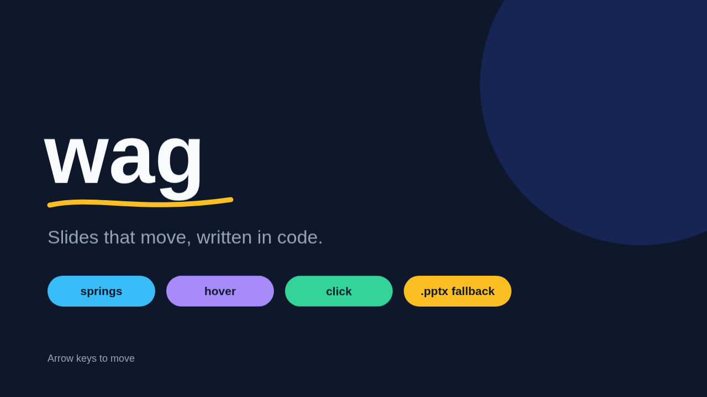
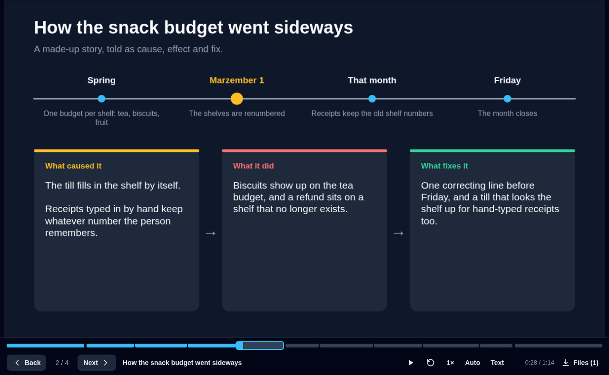
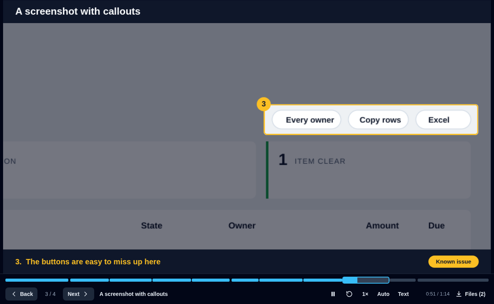
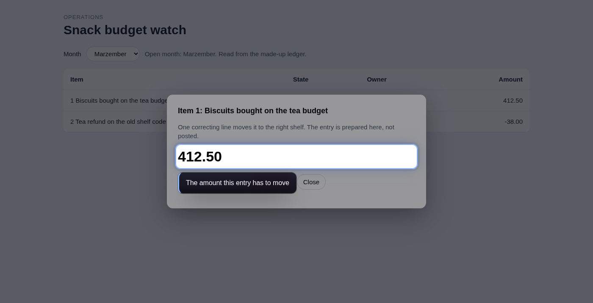
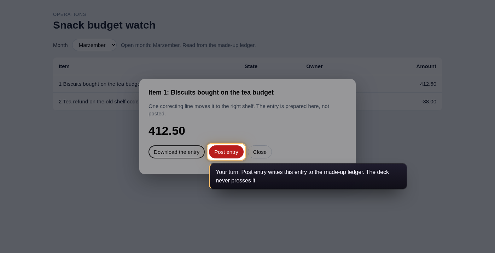
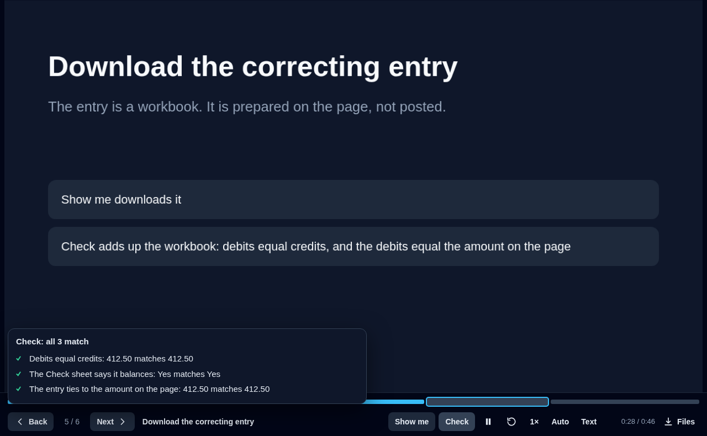
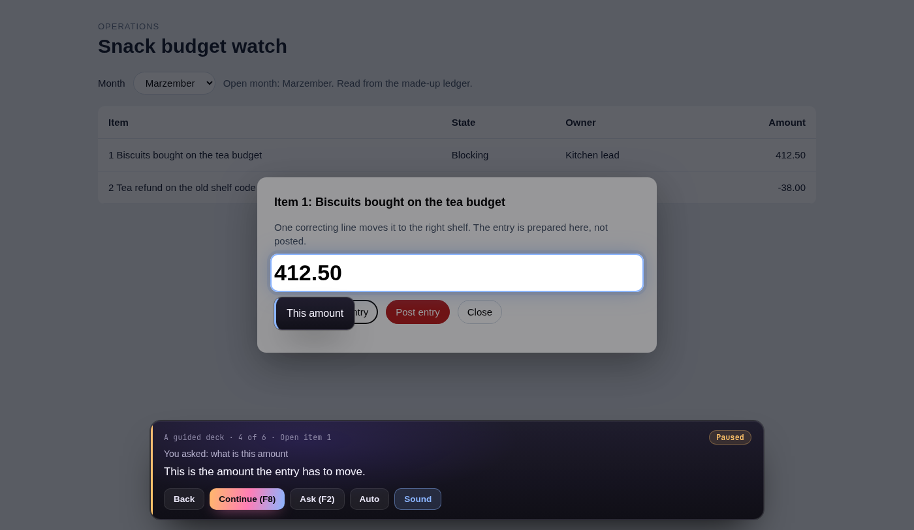
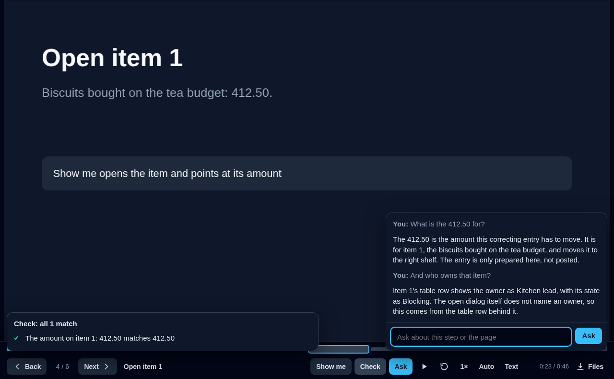

Slide decks written in code. They move, they talk, and they can walk someone through a real web page.
A deck is one TypeScript file. The player animates it with springs, reads it aloud in a voice that runs on your own machine, and in guided mode points at a live page in a browser you are already signed in to, without ever pressing anything that saves.
Elements spring between states on hover, click and drag. Builds, drawn strokes, morphing transitions, routes between slides, answers saved to Excel, and an export to PowerPoint.
Walkthroughs
Decks that talk
Narration line by line in an offline voice, a timeline to jump around in, story slides for cause, effect and fix, screenshots with zooming callouts, and Word handouts.
Guided mode
Guides that drive a page
Show me does a step on the live page. My turn rings what to click and waits for you. Check reads the page or a downloaded workbook and says whether the figures agree.
BasicsQuick start
git clone https://github.com/alaarab/wag && cd wag
npm install
npm run dev # http://localhost:5179 lists every deck
npm run new my-deck # decks/my-deck.ts, from a small starter
Open a deck from the list and move with the arrow keys. Three decks ship with the repo, all about made-up things:
demo: what slides can do, from springs and drag to a full-slide animation.
guide: a narrated walkthrough with a story slide, a screenshot with callouts and files to take away.
guided: a guided deck that drives a made-up page, public/guide/app.html.
npm run make guide # narration audio and Word handouts for a deck
npm run build # a static copy of the player and every deck, in dist/
The build is plain files that any static file server can show. You need a recent Node. The offline voice needs Python and ffmpeg, and guided mode needs a Chromium browser (Chrome, Edge or Chromium).
The canvas is 1280 by 720. A slide is a small state machine: a state is a set of overrides keyed by element id, and the player springs between layouts with Motion. Hovering the dog above switches on woof; moving away switches it off.

The first slide of decks/demo.ts. The stroke draws itself in, the circle drifts, and the buttons spring on hover and press.
The elements are box, ellipse, text, image, video, path, field, choice and scene, which hands you a DOM node to animate however you like.
shade: 'rgba(2,6,23,.55)' dims the slide outside an element
WalkthroughsA deck that talks
A walkthrough deck explains something on its own: it talks, points at parts of a screenshot, and hands out files. Give a slide narration, a list of plain sentences. The first is said when the slide arrives, and each later one after the matching step.
slide({
title: 'The two items that block the close',
narration: [
'Two items block the close.', // said when the slide arrives
'The first is biscuits on the tea budget.', // after step one
'The second is a refund on an old shelf.', // after step two
],
steps: ['first', 'second'],
}, [...])
With Auto on, the deck moves on when a line ends, so it plays through like a video; deck({ auto: true }) starts that way. A slide with nothing to say waits for the viewer, and going back never talks. deck({ pronounce: { 'Q&A': 'Q and A,' } }) changes how something is said without changing what is shown.
The player
A deck with narration or files gets a bar under the slide, with a timeline across its top. Every spoken line is one mark on the timeline, as wide as the line takes to say, with gaps between slides. Click anywhere on it to jump there; hover a mark to see its slide and line. The clock counts time so far against the whole deck.

The player bar: Back and Next, the slide count and title, play and pause, say again, speed, Auto, Text, the clock and Files. The timeline runs above it.
Key
Does
→↓PgDn
Next step or slide (also the Next button, or the arrow at the right edge when the mouse moves)
←↑PgUp
Back. Going back turns Auto off, so the deck stays where you went.
Space
Pause and carry on in a narrated deck; next everywhere else
PR
Play or pause the voice; replay the slide
A
Auto: waits about two seconds after each line, counting down on Next, then moves on
C
Text: shows the words being said
/
Ask the guide a question, in a session that can answer (see Ask)
HomeEnd
First or last slide
The speed button cycles through 1×, 1.25× and 0.85×. Browsers hold sound back until the first click or key press, so a deck opened cold shows a Start with sound button.
The voice
npm run make <deck> speaks every line with Piper, a voice that runs on your own machine, so the words go nowhere. Each audio file is named after its line, so only changed lines are spoken again. It also writes wag.json, which tells the player how long each line is; that is what sizes the timeline. Without the audio the player uses the browser's own voice, and with no voice at all it shows the words and waits about as long as reading them takes.
WAG_PIPER and WAG_VOICE point at a different program or voice file.
Story slides
story() tells how something came up: a timeline across the top, then three cards that arrive one step at a time for what caused it, what it did and what fixes it.
import { story } from 'wag';
story({
title: 'How the snack budget went sideways',
timeline: [
{ when: 'Spring', what: 'One budget per shelf' },
{ when: 'Marzember 1', what: 'The shelves are renumbered', mark: true },
{ when: 'Friday', what: 'The month closes' },
],
cause: 'Receipts typed in by hand keep the old shelf number.',
effect: 'Biscuits show up on the tea budget.',
fix: 'One correcting line before Friday.',
narration: ['The shelves were renumbered.', 'The cause.', 'What it did.', 'And the fix.'],
handout: true,
})
Screenshots with callouts
shot() shows a picture with numbered regions. The whole picture comes first with every region marked. Each step then zooms in on one region, dims the rest and shows its label, and its say line is the narration. Regions are in the picture's own pixels, so you can read them straight off the screenshot. issue: true marks a callout as a known problem.
import { shot } from 'wag';
shot('/guide/page.png', {
title: 'A screenshot with callouts',
size: [1600, 800], // the picture's own size
callouts: [
{ at: [88, 190, 1480, 92], label: 'Three counts across the top', say: 'Three cards count the items.' },
{ at: [1240, 134, 336, 42], label: 'The buttons are easy to miss', issue: true,
say: 'The filter and the two buttons sit tight under the heading.' },
],
})

Callout three of decks/guide.ts, marked as a known issue.
Files and handouts
downloads lists the files a slide offers, and the Files button in the bar lists them; shot() offers its picture by default. handout: true adds a Word document of the slide (title, picture and each point), and npm run make also writes one document of the whole deck. These need deck({ assets: '/my-deck' }), the folder under public/ the made files go in. That folder's audio/, handouts/ and wag.json are not committed.
Driving a pageGuided mode
A guided deck walks someone through a real task on a real page. Each guided slide adds up to three buttons to the bar:
Show me
The deck does the step on the live page: goes to an address, rings something with a note, clicks, picks an option, downloads a file and keeps it.
My turn
The deck rings what to click, says plainly what the click will do, and waits until the page shows it happened. It never makes that click.
Check
The deck reads the page or a downloaded workbook and says whether each pair of figures matches, showing both when they do not.
slide({
narration: 'Pick the month.',
live: {
show: [{ choose: 'Marzember', from: { role: 'combobox', name: 'Month' } }],
turn: {
point: { role: 'combobox', name: 'Month' },
says: 'Choose Marzember. It only changes what is shown.',
until: { url: 'month=marzember' },
},
check: [{
label: 'The open month',
read: { page: { css: '#read' }, pick: 'Open month: (\\w+)' },
equals: { value: 'Marzember' },
}],
},
}, [...])
Besides go, click, choose, point and wait, Show me can put words in a text box with { fill: 'words', into: target }: it only fills the box, and a page that tries to send anything as it is typed in is stopped. For a page that differs between versions, { if: { see: 'New part' }, then: [...], else: [...] } takes one branch or the other, and a check with when: { see: 'New part' } is left out, and said to be, when that part is not there.

Show me opened item 1 on the made-up page and ringed its amount.

My turn on Post entry: rung, explained, and left for your own click.

Check after Show me downloaded the correcting entry: the workbook is added up and compared with the page.
A target is the words on the page, or { role, name } the way a screen reader names a control, or { css }; within: 'dialog' narrows it to the open dialog. A check reads from the page (pick is a pattern whose first group is the figure), from a column of a downloaded workbook (summed by default; also all, first, count or moved, with where to keep some rows and * in a sheet name to take several sheets), or a fixed value. Readings can be added together with { add, minus }.
Writing a guide
guide() is a shorter way to write a whole guided deck as a list of steps. Each step becomes a numbered slide laid out for you, with its title, what it is for, and what each of its buttons will do. Without a browser the same list plays as a narrated deck.
import { guide } from 'wag';
export default guide({ title: 'Post the snack correction', assets: '/snack', app: 'https://snacks.example' }, [
{
title: 'Open the page',
say: 'First, open the page.',
show: [{ go: '/watch' }, { point: 'Snack budget watch', note: 'This is the page.' }],
},
{
title: 'Pick the month',
say: 'Pick Marzember, or press Show me.',
show: [{ choose: 'Marzember', from: { role: 'combobox', name: 'Month' } }],
mine: {
point: { role: 'combobox', name: 'Month' },
says: 'It only changes what is shown.',
until: { url: 'month=marzember' },
},
},
{
title: 'Download the entry',
say: 'Download the correcting entry. This click is yours.',
download: {
point: { role: 'button', name: 'Correcting entry' },
says: 'It downloads a workbook. Nothing is saved.',
file: 'correcting-entry*',
as: 'entry',
},
check: [{
label: 'Debits equal credits',
read: { file: 'entry', sheet: 'Lines', column: 'DR' },
equals: { file: 'entry', sheet: 'Lines', column: 'CR' },
}],
},
]);
A step has say, and any of show (Show me), mine (My turn), download (My turn for a file: the click is yours and checks can then read the file as as) and check. demo lists what to play on a made-up copy of the page where the viewer would have acted, for a recorded run.
Running the bridge
The driving is done by a small bridge, scripts/live.mjs. It connects to a browser that is already running, over the browser's debugging port, using Playwright. It needs only Node and Playwright, so the one file can be copied next to any Playwright install.
The deckShow me, My turn and Check in the bar
HTTP + key
live.mjsfinds, rings, reads and checks; refuses anything that commits
CDP
The browserstarted with --remote-debugging-port
For building and recordings, use a browser with no window. The bridge works in one tab of its own, keeps downloads in its own folder, and closes the tab when it stops:
chromium --headless=new --remote-debugging-port=9333 --user-data-dir=/tmp/wag-browser &
npm run build
node scripts/live.mjs --serve dist
# open http://127.0.0.1:5180/?deck=guided&key=$(cat /tmp/wag-live/bridge.token)
To watch it on your own screen, start the browser with a window and the bridge with --live. It then works in the tab you are looking at, and any download becomes your own click. --downloads is where your browser saves files, so a check can find the one you just downloaded:
Every start makes a new key, written to bridge.token in the bridge's folder; the deck passes it as ?key=, and a request without it is refused. deck({ app: 'https://the.app' }) is where go addresses start, and --app <address> sends them somewhere else, such as a practice copy of the page. Without the bridge the three buttons are off and the deck still plays.
While writing a deck, run the bridge without --serve and start the dev server with WAG_LIVE=http://127.0.0.1:5180 npm run dev.
What it will not do
The rules live in the bridge, not in the deck, so a mistake in a deck cannot get past them.
It never presses anything that commits. Before every click the bridge reads the real control's label off the page and refuses one that starts with save, post, approve, submit, delete, send, remove, reject, confirm, apply, run, import, sync, void, reverse, pay, create, update, mark, undo, close the period or reopen (the list is COMMITS in src/scene.ts). slide() also rejects such a Show me step when the deck is built. Those steps are My turn only, and My turn has to say what the click will do.
It refuses dialog buttons it cannot classify, and says why.
On a page that is not on this machine, a click may only read. While the bridge is clicking, anything else the page tries to send is stopped, and the step is handed back to you as yours.
It leaves a browser with a window alone unless the person at it started a live session with --live.
Every command and every refusal goes to a log, bridge.log, next to the key.
An app that reads with POST can list those paths with --reads /api/search,/api/report.
Live guide
A guided deck follows a script. A live session is for questions: a person and an assistant share one browser tab, and the assistant points, reads and talks through one small command, guide. The same bridge enforces the same rules.
node scripts/session.mjs --dir ~/.cache/wag/session \
--bridge "node scripts/live.mjs --stdio --live"
# console at http://127.0.0.1:5191/console
alias guide='node scripts/guide.mjs'
guide highlight "412.50" --note "This is the amount to move"
guide say "This is the amount the entry has to move."
session.mjs starts the bridge itself and is the only thing that can talk to it. The bridge can run on another machine through ssh, since all it needs is its input and output. The session keeps a Piper voice loaded so a line starts speaking in a fraction of a second, writes a transcript, and serves a console page that shows each line, plays it and can mirror the driven tab. --deck dist also serves a built deck, so its buttons work in the same session.
Command
Does
where
The address, the open dialog and the viewer's last few clicks
goto, find, read
Go to an address; find text; read the open dialog or the page
highlight, scroll, clear
Ring something with a note; bring it into view; take the rings away
click, choose, close
Look-only clicks, picking an option, closing a dialog
turn
My turn: ring a control, say what it does, wait for the viewer (or their download)
check
Run checks, in the same format as a deck
say, heard
Speak a line and show it; note what the person asked
screenshot, record
A picture of the tab; start or stop a recording (video, subtitles and a written walkthrough)
Any assistant that can run a shell command can be the guide. Allow it to run guide and nothing else, and give it a short map of the page.
In a live session the guide never takes over a tab you had open on something else. It works in the tab in front only when that tab is already on the page a step goes to; otherwise it opens a tab of its own. It never presses a button that hands over a file, whoever asks.
A walk on the page itself
npm run make <deck> also writes a guided deck's steps as walk.json. Start the session with --walk <deck> and it plays them in the tab it drives, with no slides in between. A bar along the bottom shows each line as text and speaks it, the step's Show me is done, a My turn is waited for, and its Check is read out.

Paused on step 4 of the made-up deck for a question. Continue puts the page back on the step.
Key or button
Does
F8, Next
The next step. After a question it is Continue: the page goes back to the step, and the walk carries on from there
F2, Ask
Opens a box to type a question in. The walk pauses. Esc shuts the box
Back, Auto, Sound
The step before; steps that go on by themselves; the voice on or off
Steps
A list of the walk's steps, to jump to any of them. Dialogs are shut and the page is made ready first: the Show me of every step since the last one that opens a page is done again, without its words. If one of those is your own click and the page is not past it, the walk lands there
Walks
With nothing playing: the walks this session has, to start one
The answer shows in the bar and is spoken, and the guide rings the cell or row it means. To look something up it may open things on the page, under the same rules as Show me. What it could not answer from the page, and anything it would not do, is kept in open-questions.md in the session folder. Nothing typed or pressed in the bar reaches the page: a dialog that holds the keyboard stays as it is.
npm run make my-deck && npm run build
node scripts/session.mjs --deck dist --walk my-deck --ask scripts/ask.sh \
--bridge "node scripts/live.mjs --stdio"
guide walk next # the same as F8, from a terminal; also back, stop, start <deck>
guide walk goto 4 # or words from a step's title; guide walk list shows the walks and steps
The bar with nothing playing
Start the session with --bar <address> and the bar is up from the start, on that page, with no walk playing. It is for a meeting where the questions are not known beforehand. F2 asks; the guide goes to the page that answers, rings what it means, and the page stays there. Nothing is paused and there is nothing to continue. Ask for a walk in words, or pick it from Walks; End this walk in the Steps list comes back to the bar with nothing playing. Add --walk as well to begin with a walk.
--rehearse <deck> plays every step of a walk with nobody watching: no voice, no bar, no waiting. Each Show me is done and each Check is read. A step's own click is never pressed: the rehearsal looks whether its button is there and leaves that step's check unread. It prints one line a step, writes the detail to rehearsal.md in the session folder, and ends with 1 if a step did not work.
1. words only 0 s A deck that drives the page
2. works 0.8 s Open the page
3. works 0.6 s Pick the month
4. failed 6 s Open item 1
"A row that is not there" did not show on the page within 6 seconds.
5. failed 6 s Download the correcting entry
"Correcting entry" did not show on the page in the dialog within 6 seconds.
this may only be because step 4 before it did not work
Rehearsal of "A guided deck": 2 of 6 steps work, 1 with words only, 3 that did not work.
Ask, inside the deck
With --ask, the session can answer questions typed into the deck itself, so there is no second window to keep open. The bar gets an Ask button (or press /). The deck pauses, the question goes to the guide along with which step you are on, what the slide says, the last Check result and where the page is, and the answer comes back as text and voice. Each question carries on the same conversation, so a follow-up like "and who owns that?" works.

Two questions about the made-up page. The second answer came from a table row behind the open dialog.
# with the browser from "Running the bridge" up on port 9333, and after npm run build
node scripts/session.mjs --deck dist --ask scripts/ask.sh \
--bridge "node scripts/live.mjs --stdio"
# open http://127.0.0.1:5191/?deck=my-deck&key=$(cat ~/.cache/wag/bridge.token)
To try it on the made-up guided deck, serve its page plainly with python3 -m http.server 5180 --directory dist and add --app http://127.0.0.1:5180/guide to the bridge command. The session keeps a deck's own files behind its key, so the driven browser cannot load the made-up page from the session itself.
--ask takes any command. It is run once per question with the question on its input, and it answers by running guide say or simply by printing the answer. scripts/ask.sh is one that uses Claude Code on a fast model, allowed to run guide and nothing else; set ASK_DIR to a folder holding a map of your page. The session's console page has the same box.
MoreDecks outside the repo
A deck made from private material should not sit in this repo. Set WAG_DECKS to a folder elsewhere: its *.ts files are listed and played with the repo's own, and its public/ folder is served the same way.
WAG_DECKS=~/private-decks npm run dev
WAG_DECKS=~/private-decks npm run make my-deck
WAG_DECKS=~/private-decks WAG_OUT=~/private-decks/out npm run build
PowerPoint export
The start page has a Download .pptx button for each deck. PowerPoint cannot run the interactions, so they are translated: entrances and builds become native animations with the springs baked into keyframes, and hover and click states become hidden slides joined by Morph and reached through mouse-over and click actions.
Not carried over: whileHover and press tweaks, drag, loops, scenes, video, working fields, narration, shades, downloads and live steps. The file opens in PowerPoint without repair, but how it plays in a live slideshow has not been checked.
Reference
Setting
For
WAG_DECKS
A folder of decks outside the repo, with its own public/
WAG_OUT
Where npm run build writes (default dist/)
WAG_LIVE
The bridge's address, for the dev server to pass /live requests on
WAG_PIPER, WAG_VOICE
The Piper program and voice file for npm run make
GUIDE_SESSION
The session's address for guide (default http://127.0.0.1:5191)
GUIDE_KEY_FILE
Where the session wrote its key (default ~/.cache/wag/bridge.token)
GUIDE_BRIDGE
Point guide straight at a bridge that listens by itself
ASK_DIR, GUIDE_MODEL
For scripts/ask.sh: the folder with your page map, and the model that answers
File
What it is
src/scene.ts
The deck format and its builders
src/kit.ts
Ready-made slides: story, shot, guide, and the dark and light themes
src/player.ts
The browser player, with the bar and the timeline
src/pptx.ts
The .pptx exporter
app/
The page that lists and plays decks
decks/
One file per deck
scripts/make.mjs
Narration audio, Word handouts and wag.json
scripts/live.mjs
The bridge that drives a browser
scripts/session.mjs, guide.mjs, voice.py
The live guide: session, command and warm voice
scripts/ask.sh
An answerer for the Ask box
spike/
The script that first tested which animation XML PowerPoint accepts
wag is an early prototype. It has been checked by hand in a browser and has no automated tests yet.